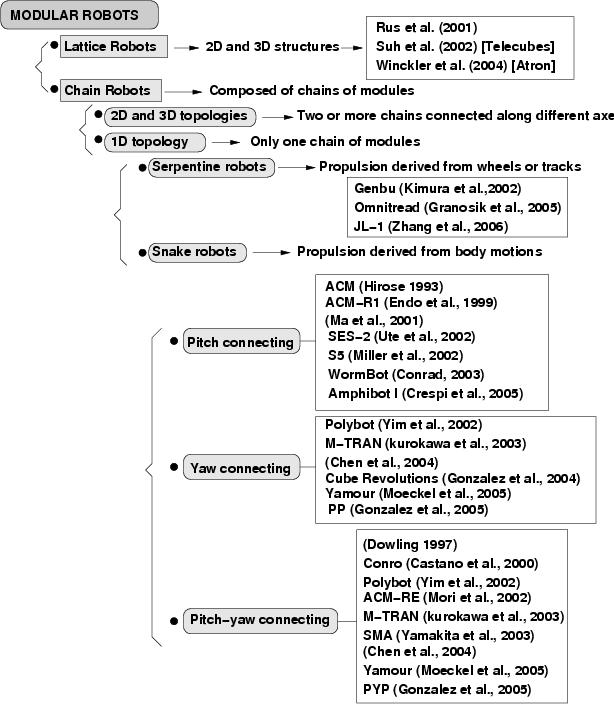
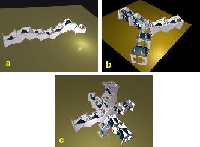
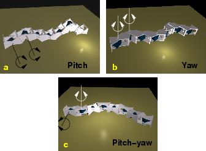

Next: 3 An overview of Up: Locomotion Capabilities of a Previous: 1 Introduction


Next: 3
An overview of Up:
Locomotion
Capabilities of a Previous:
1
Introduction
A
new classification of modular robots is proposed, based on their
topology and the connection between adjacent modules. The diagram is
shown in Fig. .
Some previous ideas of other researchers are included.
.
Some previous ideas of other researchers are included.
|
 |
Mark Yim and other researchers at Palo Alto Research Center (PARC) established a first classification of modular robots in two groups: lattice and chain robots. The former arranges modules to conform a grid, just like atoms conforming complex 3D molecules or solids. Examples of this robots are:[17][18][19]. One of the promise of this kind of robots is building solid objects, like a cup or a chair, and then rearranging the atoms to form another solid. The latter structures are composed of chains of modules. For example, the structure of a four legged robot can be thought as five chains. A chain act as the main body (or the cord) and another four chains conform the legs. Chain robots are suitable for locomotion and manipulation since the modular chains are like legs or arms.
A new
sub-classification of chain robots according to its topology is
proposed. Three new sub-groups appear: 1D, 2D or 3D chain robots
(Fig.
 )
. If the robot consist of a series chain of linked modules, the
topology is a 1D chain. Two or more chains can be connected forming
2D topologies like triangles, squares, stars and so on. All these
configurations can be fitted into a plane (when they are in its home
state). Finally, the chains can be connected so that they do not fit
into a plane, forming a 3D topology like a cube, pyramid, 3D star and
furthermore.
)
. If the robot consist of a series chain of linked modules, the
topology is a 1D chain. Two or more chains can be connected forming
2D topologies like triangles, squares, stars and so on. All these
configurations can be fitted into a plane (when they are in its home
state). Finally, the chains can be connected so that they do not fit
into a plane, forming a 3D topology like a cube, pyramid, 3D star and
furthermore.
|
 |
|
Figure: Examples of the three sub-types of chain robots: a) 1D topology. A structure with only one chain of modules. b) 2D topology: a star structure, composed of three chain of two modules. c) 3D topology. A robot composed of six chains of two modules. |
1D chain robots are like snake, worms, legs, arms or cords. They can blend their bodies to adopt different shapes. They are suitable for going though tubes, grasping objects and moving in rough terrain. If the length is enough, they can form a loop and move like a wheel. 2D and 3D chain robots can move by body motions or using legs. In general, they are more stables, because they can have more points contacting with the ground.
The family of 1D chain robots can be divided into two groups. Granosik et al.[1] propose to call them serpentine and snake robots. The former have wheels or tracks for propulsion and the latter are propelled by body motions (this group also include the robots that have passive wheels to contact with the ground). Examples of serpentine robots are Omnitread[1], JL-I[20] and Genbu[22]. Serpentine robots can also have active joints which enable them to propel themselves using body motions, even if the primary propulsion system is a special driving wheels. The principles of the locomotion of snakes robots can be applied to them too. For example, the JL-I robot can perform a lateral shift and rotating gait which are developed for a snake robot.
Snake
robots can also be divided in three sub-groups according to the
connection axis between two adjacent modules: pitch connecting, yaw
connecting and pitch-yaw connecting (Fig.
 ).
).
|
 |
|
Figure: Different connections for a snake robot. a) Pitch connecting. All the modules rotate around the pitch axis. b) Yaw connecting. The modules rotate around the yaw axis. c) Pitch-yaw connecting modules. Some modules rotate around the pitch axis, and others around the yaw. |
The yaw-connecting snake robots move like the real snakes. All the joints rotate around the yaw axis, propelling the robot like a real snake. In order to get propelled, these robots creep along a given curve path, but the body should slip in the tangential direction without any sliding in the direction normal to the body axis. These conditions are met with passive wheels, but another type of special skin can be used. There have been an active research on these robots. Yaw-connecting robots were first studied by Hirose[23]. He developed the Active Cord Mechanism (ACM). A new version, ACM-R1 was developed in [24].
Ma et al. also developed his own yaw-connecting robot and studied the creeping motion on a plane[25] and on a slope[26]. Another prototypes are SES-2 [27], S5 [28], WormBot[29] and Amphibot I[11], which has been designed for swimming.
The pitch-connecting robots only can move in 1D, forward or backward. Its movement can be generated by means of waves that travel the body of the robot from the tail to the head. The robots move in different ways according to the wave parameters (amplitude, frequency, wavelength...). Although the pitch-connecting structure is one of the simplest configuration, it can perform a simple self-reconfiguration, for example forming a loop and moving like a wheel. In previous work, we have studied deeply this type of structures[15]. Other modular robots can be connected in this way like Polybot[4], M-TRAN [13], Yamour [12], and the robot developed in the Robotics Laboratory of Shenyang Institute of Automation [7].
The pitch-yaw-connecting modular robots have some modules that rotates around the pitch axis and others around the yaw axis. These robots have new locomotion capabilities, like side-winding, rotating and rolling. Some pitch-yaw-connecting robots has modules with two DOF, like the Conro modules[9]. Others have one DOF and can only be connected in a pitch-yaw way, like ACM-R3 [6], SMA[30]. Some modules can be connected both in pitch-pitch and pitch-yaw configurations: Polybot[4], M-TRAN [13], Yamour [12], and [7]. This characteristic makes the modules more versatile.


Next: 3
An overview of Up:
Locomotion
Capabilities of a Previous:
1
Introduction